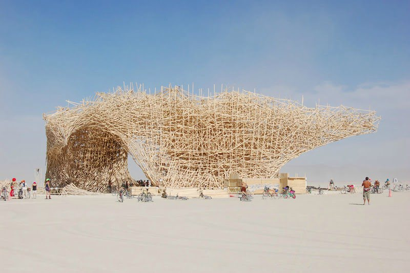

Biography
Arne Quinze is a Belgian contemporary artist, painter and sculptor. His work involves everything from small drawings and paintings, medium-sized sculptures to massive installations. Quinze was born in Belgium in 1971 and currently lives and works in Sint-Martens-Latem, a town near the Belgian city of Ghent. His early career in the 1980s was as a graffiti artist. He always questioned the role of our cities and started his search for cities to become open air museums. His work quickly evolved from Street Art to Public Art with recurring themes as social interaction, urbanisation and diversity.
The gigantic wooden construction entitled Uchronia, which he and his team built in the Nevada desert (USA) for the 2006 Burning Man festival, emphasized his pursuit for culture and nature to coexist. This was followed by numerous sculptures and exhibitions that included both large installations and small paintings and sculptures. At the present time, many of his installations are considered to be landmarks that present a different dynamic for urban development: In Paris, Shanghai, Beirut, Washington DC, Brussels, Mumbai, Sao Paolo,… Quinze has been intervening in cities now for over 25 years, and many projects are still lined up to be finalised.

What drives Quinze is the belief in the possible realization of an idealistic society where all individuals communicate and interact, aiming to bring people together and push them into a vigorous dialogue. His unconventional public installations have challenged perceptions in the city centers of Belgium (Cityscape, The Sequence, Rock Strangers, The Passenger), Germany (The Traveller), France (Camille, Rock Strangers), Lebanon (The Visitor), China (Red Beacon), Brazil (Matarazzo), the USA (Timegate, Whispers, Scarlet), among others.
‘Cities like open-air museums – it sounds like an idealistic dream, but I am striving to realize this dream. Confronting a public surrounded by art every day. Art has a positive influence on people and their personal development: it broadens their horizons and renders them more tolerant towards differences in society.’
— Arne Quinze
The beauty of nature
Arne Quinze's sculptures come into being after numerous personal encounters with the unbridled beauty of nature. They symbolise his reflection on todays growing differences between the diversity of nature and the ongoing expansion of monotone cities.
While continuously unraveling the physical processes of complex demographies they react to all impulses in order to keep equilibrium. Resulting in a play of attraction and rejection that shapes the organic forms and electric bright colours. At first glance they seem vulnerable, but they wil persist a vigour dialogue just like nature.
In every culture Quinze comes across, he is fueled by overwhelming optimism. Every new creative breed captures his research and study on interaction, and urban movement expressing the continuously evolution of human beings and their environment. Besides building architectural sculptures, he creates complex art pieces and video installations inscribing his vision in society of how people see themselves and society. Works as Bidonvilles, Stilthouses, Chaos, My Home My House My Stilthouse, My Safe Garden, Natural Chaos and Natural Chaos Satellites have been shown on several exhibitions.

Diversity
In each of Arne Quinze’s recent works we encounter a seemingly chaotic confrontation between individual elements that form an integral part of a biotope that is created in laboratory conditions and is multiplied organically. The variety of colour and form is as wide as the viewer’s imagination. The artist hereby depicts a society as a coherent and intact ecosystem, a sampling of nature, which is his chief inspiration. In this way, the sculptures and installations call for a retention of diversity and pluralism, and for experiment and cross-fertilisation. This is a clear indictment of the present trend towards monocultures and soured relations.
Bringing people back together again: according to Quinze, this should be the ultimate objective of public art. After an initial surprising impression, a sculpture is able to refine the threshold of acceptance for the passer-by, by flying in the face of the norm – norms lead only to monotonous grey cities. Just as in the artworks, and just as in nature, cities should aim for a symbiosis of numerous organisms, which in their turn fuel conversation and consequently the conservation of their future.
In fact the artist quite literally challenges monocultures. With his garden as a scale model, an explosion of life with the rampant splendour of flowers, the pursuit of variation and diversity is both a statement and a leitmotiv that runs through his work. The fact that we have already destroyed 30% of existing flora and fauna since Quinze’s birth in 1971 is abhorrent to him. It is in everyone’s interest to protect and restore ecosystems.